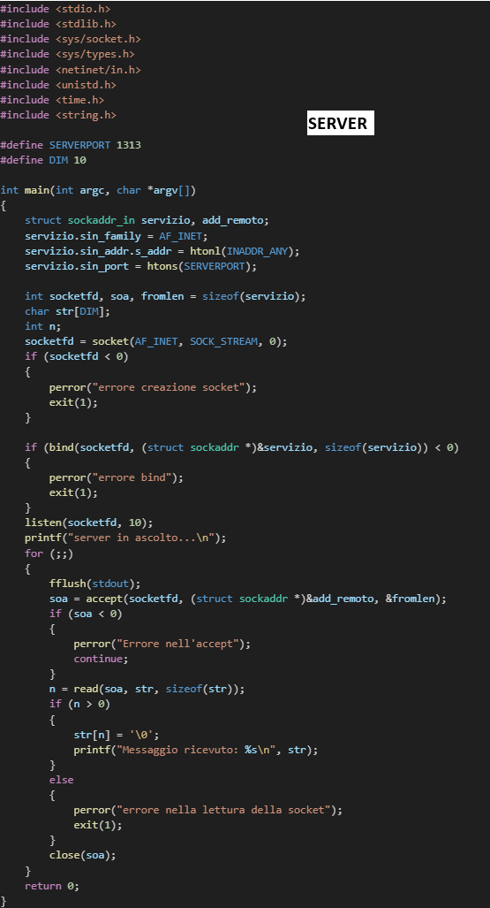
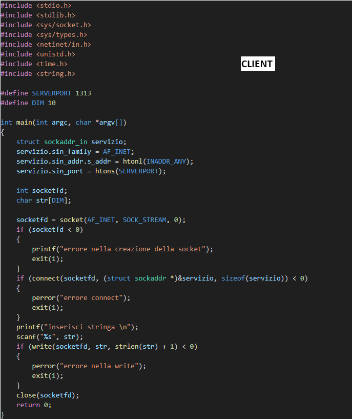

Socket
Una socket è un'interfaccia di comunicazione tra 2 o più macchine...
Le socket sono utilizzate per creare connessioni tra client e server...
Famiglie di Socket
- AF_INET: comunicazione tra host remoti...
- AF_UNIX: comunicazione tra processi locali...
Tipi di Socket
- Stream socket: orientati alla connessione (TCP)...
- Datagram socket: non orientati alla connessione (UDP)...
- Raw socket: bypassa il livello di trasporto...

SOCK_STREAM
Utilizza il protocollo TCP. La connessione è affidabile...
SOCK_DGRAM
Utilizza il protocollo UDP. La connessione non è affidabile...
Esempio connessione server-client
Il codice del programma è stato realizzato con il linguaggio C.

